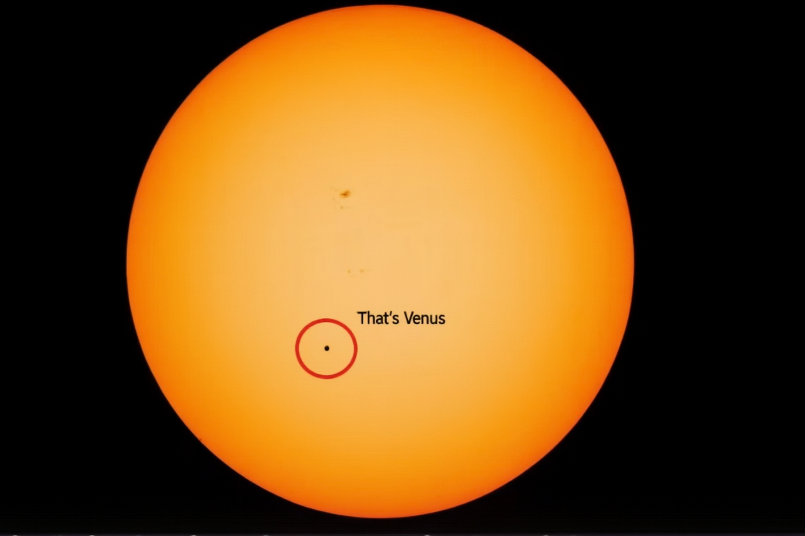

Venus
Venus is the second planet from the Sun, and it's the hottest planet in our solar system, even hotter than Mercury! Its thick atmosphere is made mostly of carbon dioxide, which traps the Sun's heat like a blanket, so the surface stays at around 465°C all the time. Venus also spins backwards compared to most other planets, and it spins so slowly that one day on Venus (243 Earth days) is longer than its whole year (225 Earth days)! Venus is about the same size as Earth, which is why it's sometimes called Earth's twin.
| Venus Facts | |
|---|---|
| Diameter | 12,104 km |
| Mass | 4.87 × 1024 kg (0.82 Earths) |
| Moons | None |
| Orbit Distance | 108,209,475 km (0.72 AU) |
| Orbit Period | 225 days |
| Surface Temperature | 465°C |
This is what Venus looks like compared to the Sun
